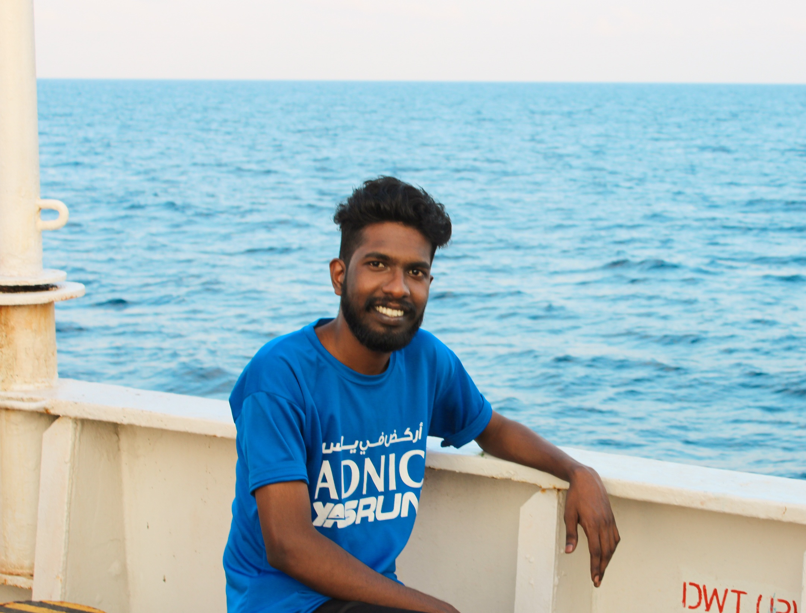

Exploring the Bay of Bengal, one profile at a time.

I am an Ocean Science enthusiast specialising in physical oceanography, machine learning, and ocean observations. Currently, I work as a Senior Research Fellow at INCOIS, Hyderabad within the Ocean Observation Network Group.
My research focuses on freshwater intrusion, ocean mixing, and salinity variability in the Bay of Bengal, integrating remote sensing, in-situ observations, and numerical modeling.
I apply unsupervised machine learning techniques — particularly Gaussian Mixture Models (GMM) — to classify oceanographic profiles and elucidate upper-ocean processes.
I was awarded 1st Prize at OSICON 2025 (Goa) for my poster on "Unsupervised Classification of Freshwater Profiles in the Bay of Bengal".
A non-profit scientific community platform founded to bridge ocean science and public awareness. Oceanvibes publishes articles, news, and educational content on marine science, ocean observations, and the wonder of the deep sea. It reflects a commitment to making oceanography accessible beyond the academic world.
Visit Oceanvibes.org ↗ Articles ↗ Facebook ↗